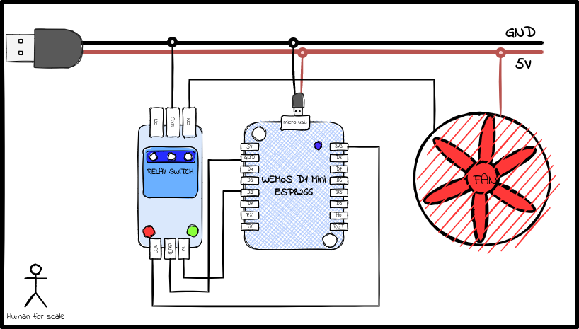

USB-Fan Controller for Cooling External Hard-drive
The Problem
I have an old laptop repurposed as a home server, which I use to stream media, backup, and a simple file server. As it is an old laptop, the storage capacity is not enough. So I just bought an external hard-drive to extend the capacity. I know, there are better ways to add storage capacity. But, I thought, this is very straightforward and cheap way to achieve the goal. Now, as the hdd is always connected to the server, it can get pretty hot when being used extensively. So I wanted to have a solution to cool the hdd whenever the temperature rises above a certain threshold. Simplest solution, a €2 usb fan controlled by ESP8266 based microcontroller. Here is a list of all tools/packages/devices I used for this project
- Wemos D1 Mini (ESP8266 based board)
- A relay switch
- USB fan
- Smartmontools package to monitor S.M.A.R.T. stats of hdd
- mosquitto MQTT server
The Circuit
Here is the circuit setup I started with.

Figure 1: Circuit Diagram
The whole setup is powerd be USB port of my laptop. The usb cable I used has a GND and 5V wire, which is powering both Wemos and the fan. The GND of fan is connected via the relay switch which is controlled by wemos.
The Sensor
New hdds these days comes with a functionality to report the S.M.A.R.T. stats which gives information about the hard dirve, which can be interpreted to evaluate hdds health and detect a failure before it happens. The linux tool called smartmontools lets us read this data and carry out some health check test on hdd. Here is the bash script I use to check the temperature of hdd and publish it to the mqtt server. Note: the flag --nocheck=standby is there to avoid polling of smart stats if the hdd is in standby or sleep mode. Otherwise, the disk will start spinning again when polled for this data. And we do not want to spin up the disk unnecessarily. The script is used in a cron job running every x minutes.
#!/bin/bash smartctl --nocheck=standby -a /dev/sdb > ~/hdd_smart.stats exitCode=$? if (( $exitCode != 0)); then echo "Nonzero exit code" exit 0 fi HDD_TEMP=$(grep Temperature_Celsius ~/hdd_smart.stats | awk '{print $10}') mosquitto_pub -h localhost -t home/server/hdd/temperature -m $HDD_TEMP
Importtant note: The version of smartmontools I have only alows the output in plain text format which can vary with the manufacturer of hdd. Or better option will be to use newer version of smartmontools which allows a json output, which is easier to parse.
The Controller
The logic for Wemos is written in C++ in Arduino IDE, compiled and uploadad to the controller.
Required packages
#include <ESP8266WiFi.h> #include <PubSubClient.h> #include "config.h" // Contains all teh configurations
Initialisation of MQTT client and wifi client
WiFiClient espClient; PubSubClient client(espClient); int relayIP = D7; int tlast; void connectWifi() { // connecting to a WiFi network WiFi.begin(ssid, password); Serial.print("Connicting WiFi"); while (WiFi.status() != WL_CONNECTED) { delay(200); Serial.println("Connecting to WiFi.."); } Serial.println("Connected to the WiFi network"); Serial.print(WiFi.localIP()); } void connectMqttBroker() { //connecting to a mqtt broker while (!client.connected()) { String client_id = "fan_controller"; //client_id += String(WiFi.macAddress()); Serial.printf("The client %s connects to the home broker\n", client_id.c_str()); if (client.connect(client_id.c_str())) { Serial.println("Connected to mqtt broker"); client.subscribe(topic); } else { Serial.print("failed with state "); Serial.print(client.state()); delay(2000); } } } void reconnect(){ connectWifi(); connectMqttBroker(); }
Whenever a new temperature reading is published on the topic, the callback function recieves and parse the message. If the temperaure is greater than tmax, the fan is turned on. If the temperature is less than tmin the fan is turned off. I have set tmin < tmax because if they are the same, the fan might switch on and off very frequently.
void callback(char* topic, byte* payload, unsigned int length) { Serial.print("Message arrived ["); Serial.print(topic); Serial.print("] "); payload[length] = '\0'; tlast = String((char*) payload).toInt(); Serial.println(tlast); Serial.println(); if (tlast > tmax){ fanOn(); } if (tlast < tmin){ fanOff(); } }
The functions for fan on and fan off are described below. They just switch the fan, switch the builtin led to indicate fan status and publish the fan state to another mqtt topic.
void fanOn(){ Serial.println("Fan On"); digitalWrite(LED_BUILTIN, LOW); digitalWrite(relayIP, LOW); client.publish(topic_pub, "on"); } void fanOff(){ Serial.println("Fan Off"); digitalWrite(LED_BUILTIN, HIGH); digitalWrite(relayIP, HIGH); client.publish(topic_pub, "off"); }
Putting it all together with setup and loop function.
void setup() { Serial.begin(BAUDE_RATE); Serial.println(); pinMode(LED_BUILTIN, OUTPUT); pinMode(relayIP,OUTPUT); //Connect wIfi connectWifi(); //Connect MQTT broker client.setServer(mqtt_broker, mqtt_port); client.setCallback(callback); connectMqttBroker(); delay(1500); client.publish("esp/test", "Hello from ESP8266"); } // the loop function runs over and over again forever void loop() { client.loop(); // Reconnect if connection breaks if (!client.connected()) { Serial.println("Reconnecting"); reconnect(); } }
The Wrapup
So, with this setup, I cool my external hdd when it gets too warm. And if the disk is in sleep mode, this does not spin it up again time to time. Although, there is one problem that I have noticed. If the fan is on and hdd goes to sleep, the fan will not shut off as there is no temperature measurement taken when in sleep. To tackle this, I want to implement a timer after which the fan will shut off automatically regardless the hdd status. And if it is still hot, the fan will start up again.
Made with ❤️ and Emacs (Org-mode)